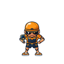
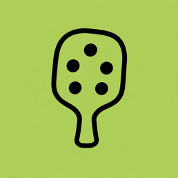
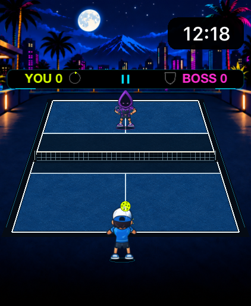
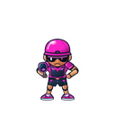
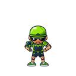
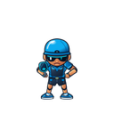
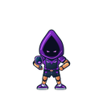
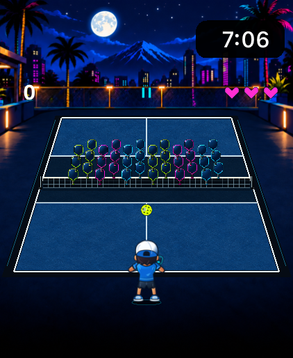

Control & placement
The Wall
Patient, steady court coverage. Move it to one side, then change direction to find space.

PickleBlastMade for Apple Watch
A neon court. Five very different opponents. Pickleball you can play with a turn of the Digital Crown.
In development.
A free United States release is planned.

01 / Boss Rally
Choose any opponent. After a win, Play Next continues through The Wall, The Banger, The Poacher, The Dinker, then The Lobber. The Lobber ends the list without looping. Matches are first to three points. Earn a save with 20 consecutive player returns; hold one at a time. Won points preserve progress. A player miss resets it. Rematch or choose another boss whenever you like.

Control & placement
Patient, steady court coverage. Move it to one side, then change direction to find space.

Pace & pressure
Watch for the power drive. Stay in position and look for the opening after the attack.

Patterns & anticipation
Your shots tell a story. Change the pattern to catch this quick reader leaning the wrong way.

Touch & resets
Soft resets mix into the rally. Stay ready as ordinary pace returns.

Height & timing
Read the high arc and meet its descent at your normal receiving area.
02 / How to play
Turn the Digital Crown, or drag across the court, to move your player. Adjust Crown sensitivity in Settings.
Get beneath the incoming ball. Your player returns it automatically. Movement comes from the controls, not a wrist swing.
Center contact sends the ball straight. Meet it nearer a paddle edge to aim left or right. Tap Pause whenever you need a break.

03 / Arcade
Three dense target waves with original paddles, cones and baskets, plus brief hit feedback. Consecutive-hit multipliers. A final showdown with The Wall.
Keep the ball in play through the run with three lives and two free recoveries per stage. Your best Arcade score stays on your Watch.
Get playing tipsBuilt for your Watch
PickleBlast is a standalone Apple Watch game targeting watchOS 10 or later. There is no iPhone companion, and gameplay needs no account or internet connection.
Pause, resume, restart, or head Home between rallies. Sensitivity, haptics, and your personal bests are stored locally.
Current testing includes Watch simulators. A minimum watchOS target does not mean every Watch model and OS version has been tested.
Read our privacy policy